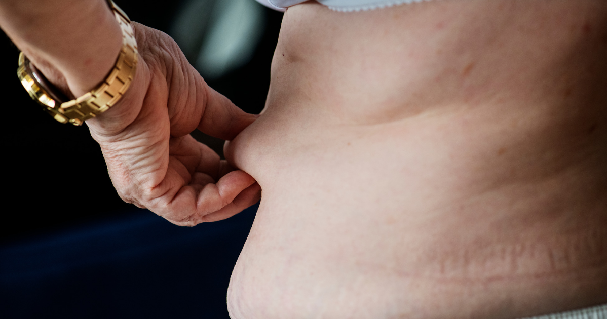

ခန္ဓာကိုယ်က အဆီတွေက သင့် ကျန်းမာရေးအကြောင်း ပြောပြနေတယ်ဆိုတာ သိပါသလား

သင့် ခန္ဓာကိုယ်မှာရှိတဲ့ အဆီအမျိုးအစား၊ နေရာနဲ့ ဒီအဆီတွေကို ဘယ်လိုဖယ်ထုတ်ရမလဲဆိုတာ သိဖို့ လိုအပ်ပါတယ်။
ခန္ဓာကိုယ်မှာ အဆီတွေများနေတာဟာ ကျန်းမာရေး ဆိုးရွားတော့မယ့် လက္ခဏာဆိုတာ ပြောဖို့မလိုအောင် သိနှင့်ထားပြီးသား ဖြစ်မှာပါ။ ဒါကြောင့် သင့်ခန္ဓာကိုယ်မှာ အဆီတွေ ဘယ်လောက်များနေပြီ၊ ဘယ်နေရာတွေမှာ အဆီတွေ ပုံနေပြီဆိုတာ အချိန်တိုင်း သတိထားဖို့ လိုပါတယ်။ ဒီဆောင်းပါးလေးမှာ အဆီပိုတွေက သင့်ကျန်းမာရေးကို ဘယ်လိုအကျိုးသက်ရောက်မှု ရှိလဲဆိုတာ ဖော်ပြပေးသွားမှာပါ။
(၁) ခန္ဓာကိုယ်ရဲ့ဘယ်အစိတ်အပိုင်းမှာ အဆီဘယ်လောက်ရှိရမလဲဆိုတာ သင့်ထိန်းချုပ်မှုအောက်မှာ ရှိမနေပါဘူး။ မျိုးရိုးဗီဇ၊ ကျား၊ မ၊ အသက်အရွယ်၊ ဟော်မုန်းအမျိုးအစားအလိုက် တစ်ဦးနဲ့တစ်ဦး ကွဲပြားခြားနားကြပါတယ်။
အဆီပုံတဲ့နေရာတွေရဲ့ ၅၀ ရာခိုင်နှုန်းလောက်က မျိုးရိုးဗီဇနဲ့သက်ဆိုင်ပါတယ်။ သင့်မိသားစုထဲမှာ ဗိုက်ခေါက်ထူထူ၊ ပေါင်လုံးကြီးကြီး အဲ့လိုလူတွေရှိရင် သင်လည်း အဲ့လိုဖြစ်နိုင်ခြေ များပါတယ်။
အဆီစုနိုင်ခြေဟာ ယောက်ျားတွေမှာ ၆ – ၂၄ ရာခိုင်နှုန််း၊ အမျိုးသမီးတွေမှာ ၁၆ – ၃၁ ရာခိုင်နှုန်းလောက် ရှိပါတယ်။
အသက်ကြီးလာလေလေ ခန္ဓာကိုယ်မှာ အဆီတွေ ပိုများလာလေလေဖြစ်ပါတယ်။ အရေပြားအောက်မှာသာမက အတွင်းကလီစာတွေမှာပါ အဆီတွေ စုပုံလာနိုင်ပါတယ်။
(၂) ခန္ဓာကိုယ်မှာ အဆီအမျိုးအစား ၃ မျိုး ရှိပါတယ်။
Subcutaneous Fat – သင့်ရဲ့အရေပြားအောက်မှာ ရှိပါတယ်။ ရှိနိုင်တဲ့နေရာတွေကတော့ လက်မောင်း၊ ပေါင်၊ တင်ပါးတွေမှာ ရှိတတ်ပါတယ်။ သင့် လက်နဲ့ ဆွဲကြည့်လို့ရပါတယ်။
Visceral fat – ဗိုိက်ခေါင်းအတွင်းဘက်မှာ ရှိပါတယ်။ အသည်း၊ အူ၊ နှလုံးတို့ရဲ့ ပတ်ပတ်လည်မှာလည်း ရှိတတ်ပါတယ်။ Subcutaneous Fat နဲ့ မတူတာက သင် ကိုင်ဆွဲကြည့်လို့မရသလို ခံစားလို့လည်းမရပါဘူး။ ဒီအဆီတွေက သင့်ခန္ဓာကိုယ်ကို ဆိုးရွားတဲ့ရောဂါတွေကို ပေးစွမ်းနိုင်ပါတယ်။
Brown Fat – ဒီအဆီတွေကတော့ သင့်ခန္ဓာကိုယ်ကို နွေးထွေးအောင် အကူအညီပေးပါတယ်။ ကလေးငယ်တွေမှာ Brown Fat တွေ အများကြီး ရှိပါတယ်။ အသက်ကြီးလာတဲ့အခါမှာတော့ နည်းနည်းပဲ ကျန်ရှိပါတော့တယ်။ ရင်ဘတ်နဲ့ပခုံးသားတွေမှာ အများဆုံးတွေ့ရှိရပါတယ်။
(၃) Subcutaneous Fat တွေမှာ ကောင်းကျိုးတွေ ရှိနေပါတယ်။ အရေပြားအောက်မှာ ရှိတဲ့အဆီတွေဟာ စွမ်းအင်တွေ သိုလှောင်ရာဌာနလည်း ဖြစ်ပါတယ်။ သူ့ဆီက ဟော်မုန်းတစ်မျိုး ထုတ်လုပ်ပြီး ဗိုက်ပြည့်နေပြီဖြစ်ကြောင်း ဦးနှောက်ကို သတင်းပေးပို့ပါတယ်။ Adiponectin ဆိုတဲ့ ဟော်မုန်းကိုလည်း ထုတ်လုပ်ပါသေးတယ်။ ဒီဟော်မုန်းဟာ သွေးတွင်း သကြားဓာတ်ကို ထိန်းညှိပေးပါတယ်။
(၄) Visceral Fat တွေ အများကြီး ရှိနေခြင်းဟာ သင့်ကျန်းမာရေးကို ထိခိုက်နိုင်ပါတယ်။ ဘာကြောင့်လဲဆိုတော့ ဒီအဆီတွေဟာ အရေးကြီးတဲ့ကိုယ်တွင်းအင်္ဂါတွေမှာ စုဝေးပြီး ခန္ဓာကိုယ်ကို ထိခိုက်စေမယ့် ကိုလက်စထရောတွေအဖြစ် ပြောင်းလဲသွားပါတယ်။ ကိုလက်စထရောတွေ များလာတဲ့အခါ သွေးထဲကိုရောက်ပြီး သွေးကြောပိတ်ခြင်းတွေ ဖြစ်လာနိုင်ပါတယ်။
Visceral Fat တွေ များလာတဲ့အခါ
နှလုံးရောဂါ
သွေးတိုးရောဂါ
ဆီးချိုရောဂါ
လေဖြတ်ခြင်းနှင့်
တခြား ကင်ဆာရောဂါများ (ရင်သားကင်ဆာ၊ အူမကြီးကင်ဆာများ) ဖြစ်တတ်ပါတယ်။
Visceral Fat များလား၊ မများလား ဆိုတာ အကြမ်းဖျင်း တိုင်းကြည့်လို့ ရပါတယ်။ အဲ့ဒါကတော့ ခါးဆိုဒ်ပါ။ မိန်းကလေးတွေက ခါးဆိုဒ် ၃၅ လက်မ ကျော်ရင်၊ ယောက်ျားလေးတွေက ခါးဆိုဒ်လက်မ ၄၀ ကျော်ရင် Visceral Fat တွေ များနေပြီဆိုတာ သတိပြုသင့်ပါတယ်။
(၅) သင့်ရဲ့နေထိုင်စားသောက်မှုပုံစံက Visceral Fat တွေ စုပုံလာစေတဲ့ အစားအသောက်အနေအထိုင် ၃ မျိုး ကို ဖော်ပြပေးလိုက်ပါတယ်။
သွားရေစာများ စားခြင်း
ကိုယ်လက်လှုပ်ရှားမှု နည်းခြင်း
စိတ်ဖိစီးမှုများခြင်းတို့ပဲ ဖြစ်ပါတယ်။
(၆) မကောင်းတဲ့အဆီတွေကို ဖယ်ရှားပစ်ပြီး ကောင်းတဲ့အဆီလေးတွေပဲ ကျန်နေအောင် ပြုလုပ်လို့ရတဲ့နည်း ၆ နည်း ရှိပါတယ်။
ကာဗွန်ဟိုက်ဒြိတ်နဲ့ ပရိုတင်းရောနှောပါဝင်နေတဲ့ အစားအစာကို စားသုံးပါ။ အစာကိုဖြည်းဖြည်းချင်း ချေဖျက်ပေးတဲ့အတွက် သင့်ရဲ့ အင်ဆူလင်ဓာတ်ကို ဆောင့်မတက်စေဘဲ ဖြည်းဖြည်းမှန်မှန် တက်စေပါတယ်။
ကျန်းမာရေးနဲ့ ညီညွတ်တဲ့အဆီကို စားသုံးပါ။ ပြန်ကြော်ဆီများကို ရှောင်ပါ။
လေ့ကျင့်ခန်းများများ လုပ်ပါ။ လေ့ကျင့်ခန်းပြင်းပြင်းထန်ထန် လုပ်ခြင်းဟာ Visceral Fat တွေ ကို လျော့နည်းစေပါတယ်။
စိတ်ဖိစီးမှုဒဏ်မှ ကင်းဝေးအောင်နေပါ။
အိပ်ရေးဝစွာအိပ်စက်ပါ။ အိပ်ချိန်မှန်အောင် အိပ်ပါ။
အရက်သေစာသောက်သုံးမှုကို ရှောင်ရှားပါ။
Source-Paing